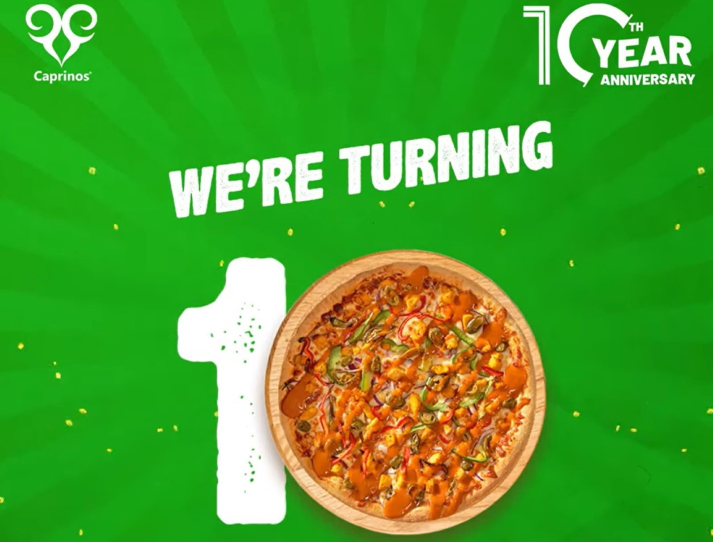
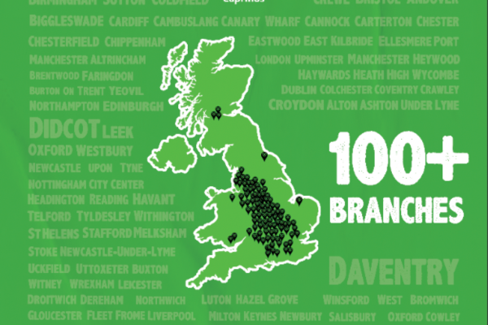

100th Opening: Slice of Success
What began as a local favourite has now become a global sensation. A milestone in our journey of bringing people together over delicious pizza.
With our passion for quality and flavour fueling every slice we serve, we make sure it's JOY IN EACH SLICE. We have been crafting more than just a pizza – we have been creating memories. Here’s to the next 100 and beyond—because great pizza knows no borders.
Read More

A Decade of Deliciousness
As we mark a decade of celebrating smiles and savouring every bite, we’re excited to celebrate our 10th anniversary with you!
This milestone is a tribute to our dedicated team, loyal customers, and countless moments over the years. Let’s celebrate together the 10th anniversary of Caprinos with exciting offers, new deals, and fantastic flavours, and many more years of delicious memories ahead.
Read More

Going Global – It's Coming to You!
We are thrilled to bring our beloved pizza to new corners of the world.
With new locations in Ireland and Pakistan, even if you are in a bustling city or a quiet town, get ready to experience our signature flavours. Join us in celebrating the global love for Caprinos Pizza and make sure you are part of the worldwide pizza party.
Read More

The Countdown Begins
Caprinos Pizza is excited to unveil its new and improved menu, crafted with a focus on quality and flavour to satisfy evolving customer tastes.
The refreshed menu features a delicious array of halal vegetarian and non-vegetarian options, each thoughtfully created to elevate the dining experience. Whether you're a long-time fan or a first-time visitor, the new offerings promise something for everyone, staying true to Caprinos' commitment to serving the best pizza around. Come taste the difference with Caprinos' latest Menu Options!
Read More

Honoring Our Achievements
We’re excited to share that our journey has been marked by a series of prestigious awards that reflect our unwavering commitment to excellence.
From being named Pizza Takeaway of the Year to earning accolades for Community & Social Responsibility, and even receiving recognition for Business & Product Innovation, Caprinos has consistently stood out across every aspect of our work. But what truly sets us apart is our dedication to meeting our customers' needs with genuine care and affection. Each award is not just a trophy on our shelf, but a testament to our passion for delivering unforgettable experiences, every single day.
Read More

A Milestone to Celebrate
Since launching our partnership with Lia’s Wings in 2022, Caprinos Pizza has proudly offered our customers the opportunity to make a difference by donating through round-up contributions when ordering on our website.
Thanks to the generosity of our customers, company donations, and a successful raffle at our recent conference, we’ve raised an impressive £14,468 so far. This amount is enough to fully fund one Lia’s Wings air transfer, which costs an average of £12,300, and we’re well on our way to funding a second life-saving flight.
Read More

Expanding Globally with Multi-Unit Franchise Opportunities.
Caprinos Pizza, rapidly expanding since it began franchising in 2016, now boasts over 100 branches, including in Ireland and Pakistan.
With an investment range starting from £100k to £150k and above, Caprinos focuses on a multi-unit franchise model, offering entrepreneurs the chance to operate multiple locations. The brand stands out by providing extensive support, from store setup to daily operations, through comprehensive training and ongoing assistance from area coaches, ensuring franchisee success and sustained growth.
Read More

From Oxford to the World
Caprinos Pizza, a thriving pizza chain that started in 2014 in the historic town of Didcot, Oxfordshire, has quickly grown from a local British favorite to a nationwide sensation with over 100 stores across the UK.
Known for its commitment to quality and a diverse halal menu catering to both vegetarian and non-vegetarian tastes, Caprinos began franchising just two years after its inception. This rapid expansion, fueled by customer loyalty, has now propelled the brand onto the global stage, with ambitious plans to double its presence in the coming year and bring its signature taste to pizza lovers around the world.
Read More
.jpeg)
Minds Behind the Magic
Our directors are the driving force behind our success, blending passion, innovation, and leadership.
Started together in 2014 and after a decade of their hard work successfully launching the 100th opening globally. With a deep love for food and a commitment to excellence, they’ve guided our journey from a single location to a global brand. Their expertise and dedication ensure that every decision is made with our customers in mind, keeping quality and community at the heart of everything we do. Meet the leaders behind bringing exceptional flavour and unforgettable experiences to every table.
Read More